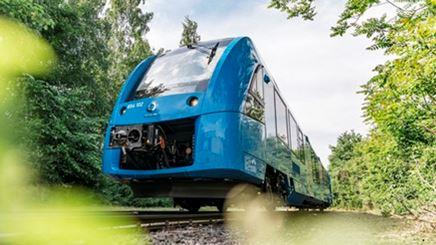

Dans l’agitation médiatique qui caractérise ce début d’année 2021, la transition énergétique occupe, aux côtés de la crise sanitaire, une grande place puisque les experts en ce domaine nous assurent que la survie de l’humanité, sinon de la planète est au prix annoncé.
Pourtant, dans la mesure où le CO2 serait bien le principal facteur à l’origine des déboires à venir, sinon constatés, la France ne représenterait néanmoins que 0.8 à 0.9 % du total des GES (gaz à Effet de Serre) émis sur Terre ce qui est tout de même assez peu. Pourtant que n’entend-on point quant à la responsabilité de chacun et quant au prix à prévoir pour participer activement à ce sauvetage, lequel est nécessairement faramineux.
Bref, au sein de cette transition énergétique, deux sources font actuellement l’objet d’une grande part de cette agitation, soit le dihydrogène (H2)(1) et la pile à combustible, généralement poussés en cela par des considérations soi-disant "écologiques" d’autant que suprême avantage, le rejet n’est que de l’eau : l’idéal en quelque sorte, sinon un miracle…
Profitons-en donc pour essayer d’y voir plus clair, sans prétention aucune, juste à partir de simples éléments connus sans oublier d’ajouter une nécessaire dose de bon sens ce qui aujourd’hui aurait tendance à faire défaut en de nombreux secteurs…
De cela, et comme antérieurement abordé, ressort un élément incontournable qui s’appelle : l’analyse de la valeur ou pour certains, le cycle de vie d’un produit, étude préliminaire également applicable à toute chose. Cela signifie que pour porter un jugement et engager un projet, une fois de plus il est indispensable d’explorer la justification tant économique, technique, environnementale que humaine et ainsi de ne pas s’arrêter en route même si les éléments connus apparaissent séduisants pour cela, une erreur trop souvent commise, soit à minima et pour mémoire :
- L’impact environnemental.
- Le rendement global s’il y a consommation et/ou production d’énergie.
- L’économie financière escomptée.
- Les avantages espérés.
- Les inconvénients potentiels.
Cependant, rappelons que pour appréhender chaque point ci-dessus, c’est donc toute la chaîne de valeur qu’il convient d’étudier, que ce soit en ce qui concerne l’énergie dépensée et sa qualité, l’impact sur l’environnement, le coût humain et financier, etc.
Une fois de plus, suivant cela, comment justifier certains points de la transition énergétique comme le programme éolien et même photovoltaïque, voire d’autres au niveau de l’habitat ?
Si l’on veut être honnête avec soi et vis-à-vis de la société, cette démarche représente un incontournable cheminement afin de ne pas tomber ni dans le rêve, ni dans l’écologie business. En effet, si la nouvelle technologie s’avère plus onéreuse que la solution qu’elle est censée remplacer, le rendement énergétique final pas meilleur ou l’impact sur l’environnement pas plus, sinon négatif, etc. quel est l’intérêt ?
L’hydrogène
Ainsi, la première question à se poser concerne la source d’où provient ce gaz particulièrement susceptible puisque sa limite basse d’explosivité (2) dans l’air atmosphérique n’est que de 4 % en concentration ce qui n’est vraiment pas beaucoup mais la limite haute peut néanmoins atteindre 75 %.
Il s’agit du corps le plus inflammable connu ce qui pose un réel souci, particulièrement en cas de fuite dans l’air (électrolyseurs, en particulier), l’énergie minimale d’inflammation n’étant que 17 m Joules.
Quant au front d’onde, précisément en cas de détonation, suivant la composition stœchiométrique (3) il fait preuve de l’une des meilleures célérités en la matière et présente ainsi toutes les caractéristiques d’un produit aux effets matériels de type brisant. Pour autant, la consommation mondiale de dihydrogène est déjà très importante dans le monde, sans guère d’incidents mais plutôt en restant locale. Il s’agit ici de satisfaire les besoins de l’industrie chimique qui s’avère le grand secteur consommateur.
Trois sources sont exploitées, à savoir :
- L’hydrogène natif, c’est-à-dire provenant directement du sol mais pour l’heure en quantités limitées sans oublier la difficulté de transport d’un tel gaz là où il doit être utilisé (4).
- Par électrolyse de l’eau.
- Par vaporeformage en deux étapes à partie du gaz naturel suivant les réactions chimiques ci-dessous (5).
Première réaction chimique à 850°C sous 25 bars de pression en présence d’un catalyseur (nickel).
CH4 + H2O → CO + 3 H2
Seconde réaction chimique à 200 °C, toujours en présence d’un catalyseur (fer/chrome).
CO + H2O → CO2 + H2
Comme on peut le constater, la génération de dihydrogène à partir du méthane natif ou obtenu depuis le pétrole ou le charbon est largement la plus répandue mais s’accompagne d’une consommation d’énergie non négligeable et de la libération de dioxyde de carbone. À nouveau et malgré tout ce qui s’écrit et se dit, nous sommes donc loin de l’idéal écologique…
Sans entrer dans les détails, les deux dernières productions constituent les principales sachant que le vaporeformage est de loin la plus importante mais évidemment se pose en plus de ce qui précède, la question de la dépendance au monde pétrolier et gazier comme les conséquences environnementales qui en découlent ce qui n’est pas négligeable d’autant qu’il y a émission de gaz carbonique.
Quant à l’électrolyse de l’eau, elle nécessite la consommation d’électricité, énergie noble par excellence sachant que le rendement d’un électrolyseur atteint au mieux 65 %, le reste partant en chaleur. Autrement dit, si l’on veut bien faire abstraction de l’hydrogène natif et que l’on examine le rendement final, on constate ce qui suit en matière de production :
ORIGINE GAZ MÉTHANE (CH4)
Extraction du sol → Reformageè Compression → Transport (gazoduc, avec stations de recompression, etc.) → Compression HP pour utilisation en bouteilles ou autre solution → Transport chez l’utilisateur
Se pose alors la question de l’utilisation du dihydrogène ainsi disponible comme élément énergétique, par exemple dans un moteur à combustion interne, soit un rendement de 35 % au mieux sans inclure la transmission directe destinée à la propulsion (véhicule automobile, train, etc.).
Sans effectuer de grands calculs, quel est le rendement final ?.. Où est l’aspect écologique, vert, renouvelable, éco-responsable, etc. ?..
Toutefois, dans la mesure où la solution suivante pourrait répondre d’une exploitation pérenne et à bas coût de production, la combustion à courte distance du dihydrogène dans une Turbine A Gaz (TAG) pourrait s’avérer de nature intéressante. En effet, les TAG actuelles de grande puissance (600 MW) alimentées en gaz naturel (CH4) affichent un rendement voisin de 62 % (6).
Accouplées à un alternateur puis débitant sur un transformateur haute tension, on obtient un rendement final intéressant associé à un moyen fiable de transport de l’électricité produite, lequel serait alors :
TAG 0.62 x Alternateur 0.95 × Transformateur HT 0.95 ≈ 0.56
In fine, quelle que soit la solution retenue la question qui se pose alors concerne la justification de brûler un gaz noble comme le dihydrogène dans une installation thermique, quelle qu’en soit la nature, sauf à ce qu’il se renouvelle naturellement, situation qui n’est pas à exclure suivant certaines récentes estimations, néanmoins à sérieusement vérifier…
ORIGINE ÉLECTROLYSE DE L’EAU
Rendement moyen pondéré des centrales françaises de production d’électricité raccordées au réseau général : » 37/38 % → rendement de l’électrolyseur : ≈ 65 % (au mieux) → Compression en bouteille du dihydrogène → Transport chez l’utilisateur → Rendement d’un moteur thermique de propulsion : ≈ 35 %.
Rendement final h (7), en ne considérant que ceux ci-dessus indiqués : 0.38 × 0.65 × 0.35 ≈ 0.086 !.. Soit moitié moindre que les meilleures machines à vapeur. Ensuite, où se trouve l’aspect écologique, environnemental, éco-responsable, etc. ?
La pile à combustible
Autre serpent du Loch Ness qui revient régulièrement mais qui souffre plus ou moins des mêmes difficultés, la pile à combustible n’est pourtant pas une invention nouvelle puisque son principe découvert en Grande Bretagne date de 1839 (8).
Inverse du fonctionnement de l’électrolyseur, celui-ci consiste à faire recombiner hydrogène et oxygène à travers une membrane microporeuse (par exemple) et ainsi à récupérer l’énergie électrique produite. Son rendement se situe entre 50 et 65 % au mieux, le reste étant évacué en chaleur.
Dans la vie courante, la pile à combustible trouve de nombreuses applications allant même jusqu’à s’introduire dans le domaine des loisirs (caravaning, etc.).
Cependant, dans la mesure où le dihydrogène ne serait pas directement utilisé, il s’agirait alors d’un produit initial comme le gaz naturel ou d’un autre dont la molécule serait riche en cet atome. Quant à l’oxygène, il convient de l’extraire de l’air atmosphérique qui en contient 20.7 % en volume, solution courante, puis de le comprimer ce qui est généralement pratiqué mais quelle que soit la méthode ce n’est pas non plus gratuit en énergie consommée.
Pour finir, on retombe sensiblement dans le cas précédent qui nécessite plusieurs étapes de transformation comme de transport avant utilisation du produit final puis lorsque l’on multiplie les rendements de chaque étape, le résultat du calcul n’est guère encourageant par rapport à un moteur thermique moderne alimenté en gaz naturel ou à gazole type HDI ou similaire.
Ainsi, sans entrer dans les détails, réduisant cela au simple mode de propulsion, on arrive à ce qui suit :
Rendement (moyen) de la pile à combustible : 0.60 (au mieux dans la réalité).
Rendement des batteries intermédiaires : 0.90.
Rendement du ou des moteurs électriques de propulsion : 0.95
Rendement final η : 0.60 x 0.90 x 0.95 ≈ 0.51, valeur séduisante mais en passant sous silence tout ce qui précède, tant pour ce qui concerne la production, la compression comme le transport du dihydrogène ou du gaz naturel et naturellement sans oublier à peu près la même chose pour l’obtention de l’oxygène et là, évidemment tout change.
DE L’ENGOUEMENT ACTUEL
Il faut donc chercher ailleurs la raison de cet engouement pour le dihydrogène et la pile à combustible qui ne répondent alors essentiellement que d’un besoin ou d’une nécessité essentiellement locale, c’est-à-dire effectivement d’un meilleur respect de l’environnement (agglomérations, zones protégées, zones polluées, etc.). Néanmoins, il ne faudrait pas oublier que ceci s’avère au détriment du rendement final et des inconvénients, lesquels évidemment se trouvent rejetés ailleurs ce qui n’est souvent pas dit...
Une fois de plus, lorsque l’on intègre toute la chaîne de fabrication, il n’y a aucun miracle !.. Ensuite, dans une époque où tout est sensé à terme devenir vert, renouvelable, éco-responsable comme écolo quelque chose… les "affaires", mot pris au sens large, priment souvent sur le raisonnable comme sur le scientifique et donc sur la réalité. Ceci d’autant que la grande majorité des consommateurs s’avère généralement incapable de porter un jugement pertinent sur tel ou tel choix technologie, ce que l’on peut comprendre. Il suffit alors de lui raconter une belle histoire que les médias vont colporter pour que celle-ci soit prise pour argent comptant ce que malheureusement l’on retrouve en différents domaines.
C’est par exemple le cas en matière d’énergie éolienne, voire photovoltaïque, deux technologies particulièrement onéreuses pour ne produire que pas grand-chose, naturellement sans aborder l’aspect écologique qu’il vaut mieux oublier (9).
A cela s’ajoute la bonne foi comme le grand cœur de chacun pour tout ce qui peut "sauver la planète", un sujet assez élastique et à géométrie variable pour lequel il n’est pas trop difficile de convaincre chacun mais sans aborder un autre sujet plus obscure, à savoir :"les affaires sont souvent les affaires !.."
De futures conflits ?..
Contrairement à ce que l’on imagine, il semblerait que le dihydrogène natif, c’est-à-dire provenant directement du sol, ne soit pas une denrée rare et que la croute terrestre en soit relativement bien pourvue, même à faible profondeur.
Il s’agit ici d’un important sujet qui fait actuellement l’objet de recherches car l’enjeu tant économique qu’écologique serait évidemment de taille. On trouve sur internet diverses informations qu’il faut évidemment prendre avec prudence mais néanmoins l’affaire mérite que l’on s’y intéresse.
Cependant, dans la mesure où l’avenir montrerait un intérêt certain pour une telle exploitation, compte tenu de l’expérience vécue avec le gaz naturel et le pétrole, comme d’ailleurs avec toutes autres richesses minérales, on peut à nouveau s’inquiéter pour l’avenir des pays classés comme pauvres ou en voie de développement, lesquels, vus de l’Occident, voire d’ailleurs, seraient alors bien inspirés de le rester sous peine ²d’interventions démocratiques² ou autres mais toujours pour leur bonheur futur.
En particulier, si l’on en juge seulement pour le Sahel qui contient déjà de l’or, des pierres précieuses et autres minerais en quantités importantes, si maintenant on ajoute du dihydrogène natif, on peut penser que les mouvements considérés comme terroristes que l’Occident combattrait pourtant énergiquement depuis déjà longtemps, ont de l’avenir. Sans naturellement oublier les migrations de populations que cela entraîne, libérant ainsi de grands espaces mais en surchargeant d’autres où la misère et les maladies ne peuvent que régner à l’état endémique, y compris pour le reste de la planète…
Les accumulateurs
Sans trop entrer dans les détails, il n’est néanmoins pas n’est pas sans intérêt de poursuivre ce débat en abordant le domaine des accumulateurs électriques car leur importance relève manifestement d’un l’enjeu géostratégique et géopolitique mondial. En effet, il est indéniable que l’énergie électrique constitue une source déterminante pour l’avenir de l’humanité technologique mais sous réserve de faire les bons choix et non de céder aux sirènes écolos et autres du moment.
Petit locotracteur à batteries et grand locotracteur AEG idem.
Embranchements privés du parc industriel de la plaine St. Denis (banlieue Nord de Paris - Disparu en 1994).
Photo courtoisie Dominique Paris.
Trop de discours et de décisions sous-tendent généralement des intérêts financiers et/ou politiques, si toutefois cela ne constitue pas un pléonasme, lesquels n’ont rien de vert, d’éco-responsable et autres élogieux arguments mais sont par nature plutôt renouvelables. Partant de ce cela, le stockage de masse de l’énergie électrique représente un incontournable obstacle car en particulier, il conditionne tout le secteur de la mobilité. Entendons par là les véhicules, les trains, voire les bateaux de commerce, les télécommunications, etc.
Prototype d’automotrice à accumulateurs de la Sté. De Dion Bouton destiné aux Chemins de Fer du Sud-Ouest. Les coffres pour batteries fer-nickel déjà adoptées à cette époque sont particulièrement bien visibles.
Photos courtoisie Yves Broncard
Cependant, si l’on considère la situation en ce début de XXIè siècle, les accumulateurs électriques ont certes faits une grande avancée sur au moins un domaine, à savoir : la capacité. Pour le reste, il n’y a guère de progrès, soit :
- L’utilisation de métaux dits rares dont le lithium et le cobalt pour lequel la Chine représente environ 85 % du raffinage mondial en ce qui concerne le premier.
- La difficulté de fabrication comme de recyclage, celui-ci restant limité et quant aux usines mettant en œuvre ces produits, elles relèvent tout de même de la classification Seveso II.
- Le prix par kW/h.
- Le nombre de cycles charge/décharge.
Il est donc impératif, au moins en ce qui concerne la dépendance à autrui de disposer d’accumulateurs électriques garantissant à la fois l’indépendance énergétique du pays utilisateur mais également un réel aspect écologique ce qui n’est actuellement pas le cas avec l’utilisation du lithium comme du cobalt (CO).
En particulier, pour ce dernier celui-ci provient en grande majorité de République Démocratique du Congo (RDC) et de Zambie, deux pays actuellement soumis à de grands troubles sociaux... Les réserves connues eu égard à la consommation mondiale, essentiellement pour les batteries et les aimants, en font un produit hautement stratégique. Quant à l’extraction dans les mines comme en ce qui concerne le raffinage, ceux-ci ne sont pas sans danger pour l’être humain, la flore et la faune.
C’est manifestement ce qui aurait conduit la Sté. TESLA à mettre au point un nouvel accumulateur au lithium mais sans cobalt, lequel présenterait plusieurs aspects intéressants comme le nombre de cycles charge/décharge, soit environ 4 000, la capacité et le prix qui ainsi chuterait sensiblement. Toutefois, ceci reste à vérifier par l’expérience…
Certains regretteront peut-être les bonnes vieilles batteries plomb-acide qui ont d’ailleurs fait des progrès mais pour mémoire, leur capacité ne dépasse guère 40 Wh/kg contre environ 200 à 250 Wh/kg pour un accumulateur lithium-ion.
Cela signifie qu’afin d’obtenir la même capacité qu’un accumulateur Li-ion, il faut cinq fois plus de masse avec un Pb-acide ce qui n’est pas gratuit en terme de mobilité !..
Suivant un chapitre antérieur, entre les deux, on trouve les Li-Fe-PO4 (Lithium-Fer-Phosphate), nettement plus stables qu’un Li-ion avec deux fois plus de possibilité en charge-décharge mais affichant une capacité de seulement 120 Wh/kg.
Reste donc à mettre au point un accumulateur, lequel sans être parfaitement écolo serait néanmoins plus respectueux de l’environnement et des inévitables et conflictuelles interférences géostratégiques tout en assurant à la fois l’indépendance énergétique et une capacité attrayante pour le pays utilisateur.
Peut-être faudrait-il revenir au fer-nickel (Fe-Ni) qui équipait déjà dès le début du XXè siècle des trains automoteurs avec de telles batteries, incluant la récupération d’énergie... Pour rappel, une fois de plus, les Anciens y avait déjà pensé avec les moyens de l’époque !.. Malgré tout ce qui s’écrit et se dit, ici encore, rien de nouveau sous le soleil sinon que des adaptations et des améliorations de ce qui existait déjà il y a un siècle.
LE RENDEMENT GLOBAL
Revenons un instant sur le rendement global car il s’agit d’un élément déterminant pour l’adoption de telle ou telle solution technique, au moins en ne considérant que celui lié à la seule propulsion d’un véhicule, par exemple.
Comme précédemment exposé, on constate ce qui suit :
Rendement pondéré des centrales électrique : 38 % (recharge des batteries).
Rendement des batteries : 90 %
Rendement du ou des moteurs électriques de propulsion : 0.95
Rendement final : 0.38 x 0.90 x 0.95 = 0.32 ce qui est nettement supérieur à l’utilisation du dihydrogène dans un moteur à combustion interne, dans une turbine à gaz comme à celui d’une pile à combustible si l’on tient compte des nécessaires étapes de transformation du dihydrogène comme de l’oxygène avant leur utilisation qu’il ne faut surtout pas oublier...
L’ÉCONOMIE FINANCIÈRE
Dans la mesure où actuellement (année 2021) l’utilisation d’accumulateurs est plus onéreuse que celle d’un moteur thermique (gaz ou gazole), l’économie s’avère à terme néanmoins substantielle, comme elle peut l’être avec une voiture électrique qui ne demande quasiment aucun entretien. Ensuite, le coût financier des recharges est avantageux, soit en moyenne 0.15 € TTC le kW/h en France pour l’année 2020 et naturellement moins en matière industrielle. Si l’on considère un véhicule, quel qu’il soit, nécessitant par exemple une capacité de 1 000 kW/h, une recharge ne représente ainsi que 1000 x 0.15 = 150 € et toujours naturellement moins en matière industrielle pour laquelle le tarif est plus intéressant que dans le domaine privé, incluant éventuellement la récupération d’une partie de la TVA.

Montage photo de la future rame Coradia sur batteries, en cours de réalisation pour l’Allemagne.
150 passagers à 160 km/h sur 80 km. Doc. Alstom via internet.
Ceci montre, s’il en était encore besoin et malgré les inconvénients actuels que l’on ne peut dissimuler, certains points essentiels comme le faible coût des recharges, la quasi absence d’entretien, l’autonomie nationale en matière de production d’énergie électrique, la simplification technique du matériel et sa fiabilité sont déterminants.
Ensuite, il est aujourd’hui à peu près certain que les accumulateurs vont effectuer de grands progrès, tant en matière de durée de vie, d’indépendance nationale de fabrication comme de recyclage. Il y a donc ici nécessité d’être attentif à l’évolution de la technologie qui peut s’avérer rapide (10).
Toutefois, rappelons que le véhicule électrique, quel qu’il soit, est cependant grevé de gros inconvénients. Ensuite, ce ne sont pas les éoliennes et autres panneaux photovoltaïques qui pourront assurer une production d’énergie électrique de masse à l’échelle de la France, stable, verte, écolo, éco-responsable, etc. pour assurer son développement… (11)
Leur participation au mix énergétique ne pouvant être que marginal et à quel prix financier comme environnemental !..
En conclusion, dans la mesure où la capacité d’un nouvel accumulateur électrique conditionne évidemment les performances du matériel qu’il est sensé alimenter, suivant les spécificités de l’époque actuelle, les premières caractéristiques qui lui seraient demandées sont en premier lieu :
- D’assurer des fabrications locales garantissant ainsi d’indépendance nationale comme de ne pas faire appel à des matériaux stratégiques qui conduisent à dépendre d’autrui pour l’approvisionnement des constituants,
- D’utiliser des constituants sans dangers particuliers et aisément recyclables.
- Conduire à un prix de vente attrayant du Wh/kg.
Vient ensuite la capacité énergétique, laquelle sans naturellement constituer un paramètre secondaire, ne doit néanmoins pas conduire à des complications se traduisant par une situation inverse de ce qui précède, ce qui est tout de même le cas aujourd’hui. Pour parvenir à cela, l’une des pistes possibles pourrait être de poursuivre le développement du couple fer-nickel mais ce n’est pas le seul.
Faire simple et rustique n’a jamais déshonoré personne, bien au contraire mais ce n’est pas nécessairement toujours facile et de plus, forcément bien vu.
J-M.T.
NOTES ET RÉFÉRENCES
1. Conventionnellement, l’atome d’hydrogène s’écrit H. Quant à la molécule constituée de deux atomes, il s’agit alors de dihydrogène de symbole H2.
2. Concentrations minimale et maximale en dihydrogène dans l’air atmosphérique (LIE = Limite Inférieure d’Explosivité - LES = Limite Supérieure d’Explosivité).
3. Rapport entre la teneur en dihydrogène et l’oxygène contenu dans le milieu considéré, soit carburant/comburant.
4. Il s’agit de dihydrogène (H2) sortant directement du sol comme dans le petit village du Mali de Bourakébougou situé à 60 kms au N/O de Bamako, soit 4 bars constants. Les sources sont très nombreuses dans le monde, y compris à faible profondeur et sous réserve de confirmation quant aux quantités disponibles et pérennes, cette solution pourrait à terme se révéler intéressante. Toutefois, reste la difficulté du transport et d’utilisation au niveau d’un véhicule (par exemple) qui en renchérissent considérablement le prix.
5. Opération également appelée reforming en langue anglaise.
6. TAG de la Sté. GENERAL ELECTRIQUE (GE), telles que celles utilisées par EDF à Bouchain (Nord) soit 600 MW de puissance maximale atteinte en 30 minutes et à Montereau (Sud de Paris), soit 2 x 185 MW.
7. Le rendement d’un procédé physique s’écrit η (lettre grecque êta).
8. Pour trouver l’origine de la pile à combustible, il convient de remonter à 1806, année durant laquelle le physicien anglais Sir Humphry Davy met en évidence l’électrolyse de l’eau donnant le l’oxygène et de l’hydrogène. Ensuite, il faudra attendre 1839 pour qu’un scientifique suisse, Christian Friedrich Schönbein constate un courant inverse induit par la recombinaison des deux gaz.
Néanmoins, la véritable expérience ne verra le jour qu’en 1845 lorsque le chimiste anglais Sir William Robert Grove en coopération avec Schönbein réalisera ce que l’on peut considérer comme la première pile à combustible hydrogène-oxygène. Rien de nouveau sous le soleil !
9. Pour mémoire en France, soit 2.57 % et 7.17 % = 9.74 % du parc énergétique français en 2019, soit respectivement pour le photovoltaïque et l’éolien : 2 088 + 15 935 = 18 023 MW installés au total à fin 2019.
10. REHABILITONS DE TRAIN SUR PNEUMATIQUES !.. Lignes secondaires abandonnées. Jean-Marc TRUCHET - Autoédition La Plume Du Temps.
Internet : www.laplumedutemps.net
ENERGIES RENOUVELABLES… VRAI PROGRES OU AUTRE CHOSE ?..
Partager cette page